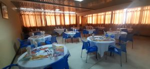

La Cité universitaire de l’ENSTTIC, d’une capacité d’accueil effective de 793 places répartie sur 201 chambres. Elle constituée de quatre blocs d’hébergement avec eau chaude et chauffage central.
Chaque chambre est équipée de lits, de bureaux et d’armoires. Avec quasiment toutes les commodités qui facilitent l’environnement de travail estudiantin.
Le bloc M1, sécurisé (24/24 et 7/7) composé de 54 chambres
38 chambres sont affectées aux étudiantes de l’ecole.
16 chambres avec une entrée indépendante réservées au service de la formation contenue.
Le bloc M2 : Composé de 53 chambres pour étudiants.
Le bloc M3 : est composé de 41 chambres (dont 04 sont aménagées sous forme d’appartement, elles sont réservée pour les invités).
Le bloc M4 : est composé de 53 chambres pour étudiants.
La Cité universitaire de l’ENSTTIC propose une offre de restauration pour ses étudiants et le personnel enseignant et travailleurs en fonction d’un menu établi par les étudiants et approuvé par le médecin et le responsable de la division. Le Restaurant est ouvert du dimanche au samedi de 12h00 à 13h00 et de 18h15 à 21h. Il est composé de 04 grandes salles pour 200 places assises. La cafétéria de l’ENSTTIC est ouverte du dimanche au jeudi de 8h à 19h. C’est l’endroit incontournable de la Cité universitaire de l’ENSTTIC. Dotée d’une grande salle, elle propose outre ses offres des formules petit-déjeuner et goûter.
il existe des instalations nécessaires et bien préparées pour les étudiants
La première fonction sociale de la bibliothèque d’une façon générale, est de garantir un accès de tous, à l’information et au savoir.
Elle permet un égal accès de tous à la formation, à l’information et à la culture.
La bibliothèque de l’école est un service pédagogique dont le rôle principal est de contribuer à la formation des étudiants de la première à la cinquième année, et de soutenir l’action de l’enseignant. À ce titre, elle intervient dans les démarches d’apprentissage, de formation et d’enseignement.
La bibliothèque regroupe l’ensemble des disciplines, matières, et modules relatifs aux programmes de formation de tous les paliers de la première à la cinquième année.
La bibliothèque aide aussi l’étudiant à mieux cibler ses ouvrages en matière de formation, et de recherche. Il peut en effet utiliser différents types de livres ou de revues scientifiques. Quand l’étudiant n’a pas trouvé le livre emprunté intéressant, il suffit de le restituer à la bibliothèque et d’en choisir un autre.
La bibliothèque est aussi un lieu de proximité, un espace de rencontre entre étudiants et enseignants notamment dans le cadre de l’encadrement des Projets de Fin d’étude. La bibliothèque de l’école est dotée à l’étage d’une salle de lecture de 50 places pour le travail individuel ou en groupe .
La bibliothèque de l’école est chargée de :
Proposer les programmes d’acquisition des ouvrages.
Organiser le fond documentaire.
Entretenir le fond documentaire, et la mise à jour constante de son inventaire.
Mettre en place les conditions d’accompagnement appropriées d’utilisation du fond documentaire par les étudiants et les enseignants.
Assister les enseignants et les étudiants dans leurs recherches bibliographiques.
Gestion du fond documentaire.
Modalités d’inscription à la bibliothèque:
La carte de lecteur est délivrée après inscription à la bibliothèque. Elle est personnelle, indispensable pour la consultation des documents, y compris une consultation sur place.
Les étudiants dispose d’un certain confort ainsi que les principaux aménagement de la vie moderne:
Restaurant et Cafétéria.
Salle de télévision.
Accès Wifi.
Salle de sport, de musculation.
Terrains de football.